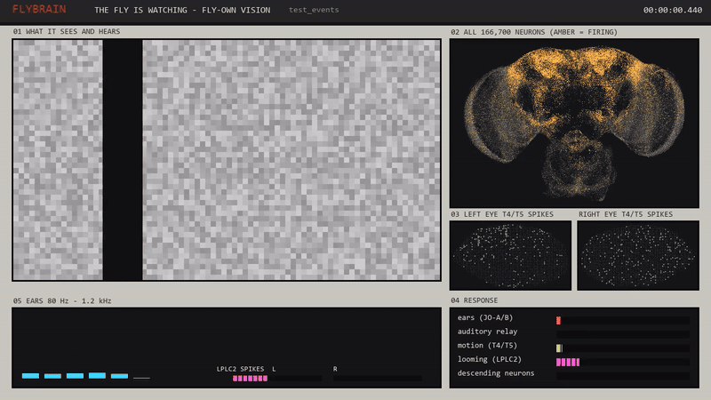
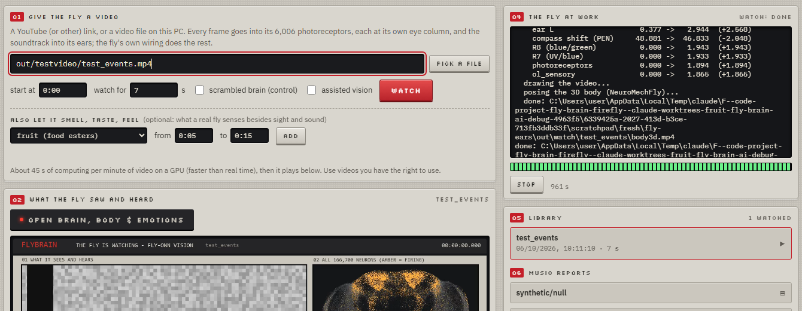
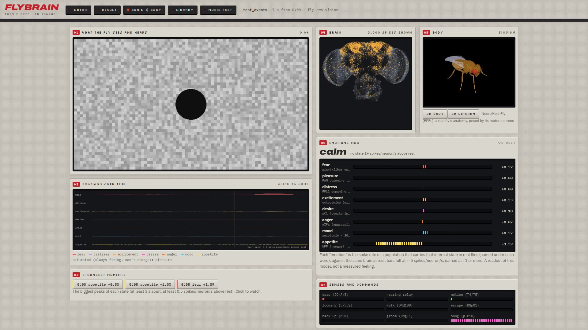
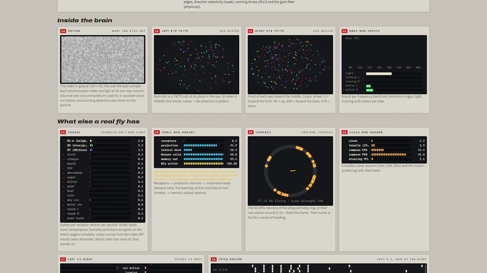

A real fruit fly brain watches your videos and hears your music.
Give it a link or a file. The light reaches the photoreceptors of the complete fruit fly connectome at their real eye columns, the soundtrack reaches its ears, and from there it is only the fly's own wiring: nothing trained, nothing drawn in. You see every neuron that fires, a 3D fly posed by its own motor neurons, and what its brain makes of what it saw.
The 80-second walkthrough. Every shot is the real app recording a real run.
From your video to the fly's motor neurons
Only the first step, light and sound into the receptor neurons, is a model of ours. After that every step is the connectome.
Ears
The soundtrack in 8 frequency bands into Johnston's organ, the fly's ear (138 neurons), then the hearing relay and beyond.
Every other sense
Smell, taste, wind, heat, cold, humidity and touch, scheduled into their own receptor neurons while the video plays.
Read out, not invented
Fear, appetite, compass heading, memory and clock are spike rates of the populations that carry them in real flies, against the same brain at rest.
Its own wiring sees it coming

A test video with known events: bars sliding, then a dark disc rushing at the camera. Nothing of this program detects looming; the light goes only into the photoreceptors. The fly's looming neurons and its escape neuron fire more for the approaching disc than for the sliding bars, in 5 of 5 noise seeds.
Watch, then look inside



Human or AI music?
The second half of the project plays songs into the fly's ears and asks, with questions fixed before running, whether its brain's response tells human-made from AI-generated music, beyond what its ears got and beyond a scrambled brain. Unbiased by design: same loudness, same codec, fixed clips, splits by song, permutation nulls.
On the synthetic method check, plain audio separated the classes (AUC 0.94) and the fly brain did not (0.44). The report says so.
Checked against a real fly, and against itself
Each claim has a script that reproduces it. The weak spots are on this list too.
| check | result | |
|---|---|---|
Every watched video re-simulated from its inputs (audit.py) | the same, step for step, bit for bit | PASS |
| 1 s of video = 1 s of brain time | 20 ms steps, every frame shown for exactly its time | PASS |
| Nothing to see or hear: do the senses stay at rest? | a grey view in silence leaves them at rest | PASS |
| Eye orientation, against the 3-D anatomy | lamina front = anterior (r 0.88 / 0.72), up = dorsal (0.94 / 0.99); medulla front/back crossed, as the optic chiasm does | PASS |
T4 likes bright edges, T5 dark edges (physio.py) | T4 +0.040 vs -0.031; T5 -0.039 vs +0.030 | PASS |
Approaching disc vs sliding bars (looming.py) | looming and escape neurons respond more, 5 of 5 seeds | PASS |
| T4/T5 prefer the real fly's directions | 13 of 16 subtype × eye groups | MOSTLY |
| How strongly they prefer it (direction selectivity) | 0.04 here; 0.3-0.8 in a real fly | WEAK |
| Fly brain tells human from AI music (method check) | AUC 0.44, not above chance | NO |
What is real
Every spike, rate, raster mark and bar comes from stepping the MaleCNS connectome in the video's own time. Re-running a video gives the same numbers, bit for bit.
What is not like a real fly
The video is spread over each eye's whole field like a panoramic screen. The dataset has fewer R1-6 photoreceptors than a real eye. Synapses take one 20 ms step. The 3D body is posed, not simulated with muscles.
Run it on your own videos
Python 3.10+, ffmpeg, and an NVIDIA GPU for real time (a CPU works, slowly). The brain
(~260 MB) is downloaded once.
# the brain, next to fly-ears, in a folder named firefly git clone https://github.com/arpanguria68-ui/flybrain-nes firefly git clone https://github.com/arpanguria68-ui/fly-ears cd firefly python -m venv .venv .venv/Scripts/pip install -r requirements.txt .venv/Scripts/pip install -r requirements-gpu.txt # NVIDIA GPU .venv/Scripts/python -m flybrain download cd ../fly-ears # the test video, then the browser app on http://127.0.0.1:8790/ ../firefly/.venv/Scripts/python make_test_video.py ../firefly/.venv/Scripts/python ui.py
On Linux and macOS use .venv/bin/. Optional: the 3D body (NeuroMechFly, Python 3.12) and
yt-dlp for links. Use videos you have the right to use; your videos and results stay on your PC.
Full details in the README.